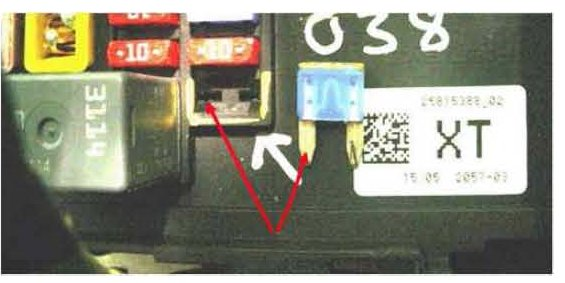
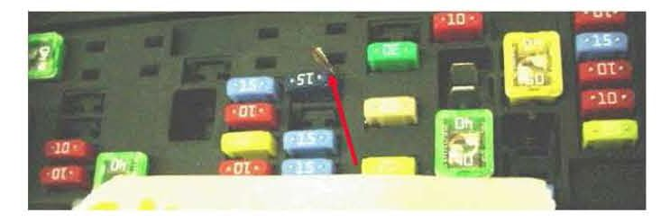

Electrical - No Start/No Crank/Int Electrical Operations
TECHNICALBulletin No.: 08-06-03-007
Date: June 27, 2008
Subject:
No Start, No Crank, Intermittent Electrical Operations (Check For Poor Connections Within Engine Wiring Harness Junction Block)
Models:
2007-2009 Cadillac Escalade, Escalade ESV, Escalade EXT
2007-2009 Chevrolet Avalanche, Silverado, Suburban, Tahoe
2007-2009 GMC Sierra, Yukon, Yukon XL, Yukon Denali, Yukon Denali XL
Condition
Some customers may comment on a no start, or no crank, or intermittent electrical operations.
Cause
This may be caused by probing fuse or relay connectors with incorrect J-Tools, which causes splayed terminals and poor electrical connections. Customers may also have installed wires adjacent to the fuse connector blades in order to create an electrical circuit, which also creates a potential loose connection at the fuse. Other potential causes are probing by independent repair shops during installation of aftermarket accessories like remote start systems.
Correction
If the terminals are damaged beyond repair, the engine wiring harness junction block will have to be replaced.
Be sure to use the correct J-Tool (J-356616-35), which is designed to prevent splaying of the terminals and loose connections.
Important:
DO NOT use any other device (incorrect J- Tool, multi-meter probe) to test fuse/relay terminals.

The figure shown shows splayed fuse terminals due to probing with a round instrument, which caused a poor electrical connection between fuse blade and terminal (note lack of witness mark on fuse blade).

The figure above shows a wire jammed into fuse slot (potential electrical tap by customer).
Warranty Information
This repair will not be covered under warranty due to damage/failure caused by inappropriate probing or customer abuse.

Disclaimer